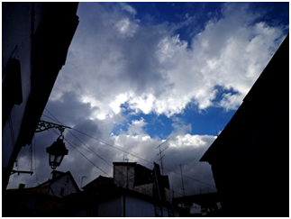

Investigador da UBI publica na revista Science
António Tomé integra uma equipa internacional que avançou com novos dados no que toca à formação de nuvens.
O docente da Universidade da Beira Interior (UBI), António Tomé, faz parte de um grupo de investigação internacional que contribuiu para perceber melhor quais os elementos que contribuem para a formação de nuvens. O trabalho do grupo CLOUD – nuvem em inglês, do acrónimo Cosmics Leaving OUtdoor Droplets – foi publicado na prestigiada revista Science na última semana.
António Tomé é docente do Departamento de Física e integra uma equipa que recebe ainda o contributo dos investigadores portugueses António Amorim e Filipe Duarte Santos, do laboratório SIM da Universidade de Lisboa.
O estudo, publicado com o título “Oxidation products of biogenic emissions contribute to nucleation of atmospheric particles”, mostra que as emissões das florestas podem ter um papel fundamental nos momentos iniciais da formação das nuvens. Sabia-se que neste processo é necessário ácido sulfúrico. No entanto, a concentração deste elemento não era suficiente para explicar a taxa de formação de partículas que ocorre na atmosfera e que resultam em nuvens.
As experiências levadas a cabo no CERN - Organização Europeia para a Pesquisa Nuclear, na Suíça, apontam para o papel relevante dos vapores lançados pelas árvores, depois de passarem por um processo de oxidação na atmosfera. Combinados com ácido sulfúrico, formam partículas que são as sementes da formação de nuvens. Estes resultados terão um papel fundamental para a obtenção de modelos de previsão mais precisos.
Desfio dos investigadores portugueses
A equipa portuguesa da CLOUD trabalhou e continua a trabalhar nos sistemas de aquisição e armazenamento de dados, que cumpriu os propósitos no âmbito do armazenamento dos dados, controlo da experiência e apoio ao tratamento e análise dos dados. Os investigadores nacionais tiveram ainda uma participação ativa no desenvolvimento do sistema de iluminação de ultra violeta (UV), por fibras óticas, permitindo, não apenas um ambiente livre de contaminação, mas também um melhor controlo da temperatura da câmara, onde decorreu a experiência.
Nos testes CLOUD foram utilizados mais de uma dezena de instrumentos para medições de diversas quantidades associadas a aerossóis. Na sua grande maioria estes instrumentos são os mesmos que se utilizam nas medições atmosféricas, tendo a sua integração num sistema coerente e interligado de medições representado um desafio para a equipa portuguesa.
Parceria internacional
CLOUD é uma parceria internacional e interdisciplinar de cientistas de Portugal (Universidade de Lisboa e Universidade da Beira Interior), da Áustria (Universidade de Innsbruck, Universidade de Viena), da Finlândia (Instituto Meteorológico Finlandês, Universidade de Eastern Finland, Universidade de Helsínquia), da Alemanha (Johann Wolfgang Goethe University Frankfurt, Leibniz Institute for Research Troposheric e Karlsruhe Instutute of Technology), da Rússia (Lebedev Physical Institute), da Suíça (CERN, Paul Scherrer Institute e TOFWERK AG), do Reino Unido (University de Leeds e Universidade de Manchester), da Suécia (Universidade de Stockholm) e dos Estados Unidos da América (California Institute of Technology, Carnegie Mellon University, e Aerodyne Reserch Inc.).
publicado em: quarta-feira, 14 de Maio de 2014